原文连接:https://www.cnblogs.com/wyq1995/p/11878331.html
最近一段时间都花在了学习vue上，还总是断断续续的，学习的效果不是很明显，思考了好久了，应该是没有进行一个系统的总结，导致很多知识点总是似是而非，而且也有一部分是思维还没有从java转变过来，废话不多说，慢慢学吧！
准备将我学习vue的只是总结一下当个笔记吧，不记得的时候回头看一看；
vue官方文档：https://cn.vuejs.org
1.什么是vue.js
其实百度一下可以知道很多说明，是一套用于构建用户界面的渐进式框架，Vue 被设计为可以自底向上逐层应用，Vue 的核心库只关注视图层....，说实话这些刚开始对我来说完全没有什么用，直接学就对了，暂时就把vue当作一个js的第三方库用，就类似jquery一样，首先用script标签引入，然后用特定的语法使用就ok了；
当然，这是最low的方式，后面我们慢慢学怎么和webpack包管理工具集成，实现模块化开发，在此，我们先了解一下几个概念：
node：什么是node呢？我们知道js代码只能运行在浏览器上，但是没有浏览器js可以运行吗？当然可以，于是就有了node，node就是一个js的运行环境，你可以把它理解为浏览器的替代品，而且最关键的是js摆脱了浏览器的限制之后，就可以用js写后端代码了；比如可以写个服务器，其实就是写个程序跑起来一直监听电脑的某个端口，外界可以通过http请求访问这个端口，然后程序就收到这个请求的url，根据url中的路径去读写文件，然后返回用户请求；
npm：可以简单的理解为一个下载第三方库的工具，有了这个工具，你想在你的项目中使用优秀的第三方库只需要一个命令可以了npm i xxx -s，最比较新的node中已经自带的npm，所以你无需自己去下载
webpack：可以用npm下载，在模块化开发时候用到的，因为如果模块之间的依赖关系很复杂，项目做好之后，页面加载或交互时，将会发起大量请求，为了性能优化，需要使用webpack这样的打包器对模块进行打包整合，以减少请求数。借用一张图，其实就是简化依赖关系的一个打包工具
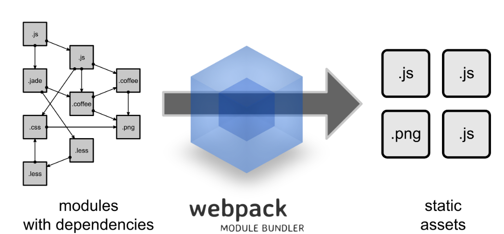
总之一句话，node是一个运行环境，npm是下载第三方库的工具避免重复造轮子，webpack打包工具，优化性能
2.vue简单使用
我们从最简单的开始，随便准备一个html文件，千万不要从vue-cli脚手架开始，因为刚开始目录太多，一脸蒙逼w(°ｏ°)w
我这里编辑器用的是vscode，强烈推荐用这个，我用这个编辑器的最大原因是轻量级(千万别下错了，vscode全称叫做Visual Studio Code，还有一个名字很像的Microsoft Visual Studio Code，这个有几个G的大小....)，而且想要什么插件直接下载，好用，当然有兴趣的也可以用webstorm等；
新建一个html文件，用vscode打开，然后 ！+Tab快速生成html模板，引入vue的js文件，并且在vscode中下载一个open in browers插件，这样就可以在html中右键，选择是在默认浏览器打开还是在其他浏览器打开
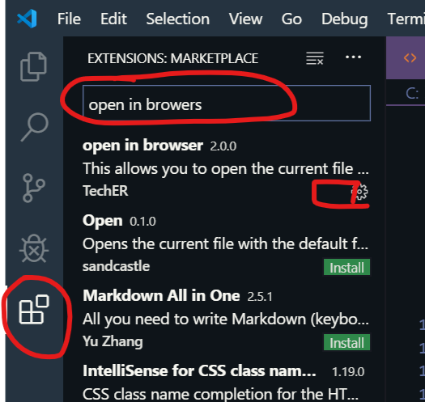 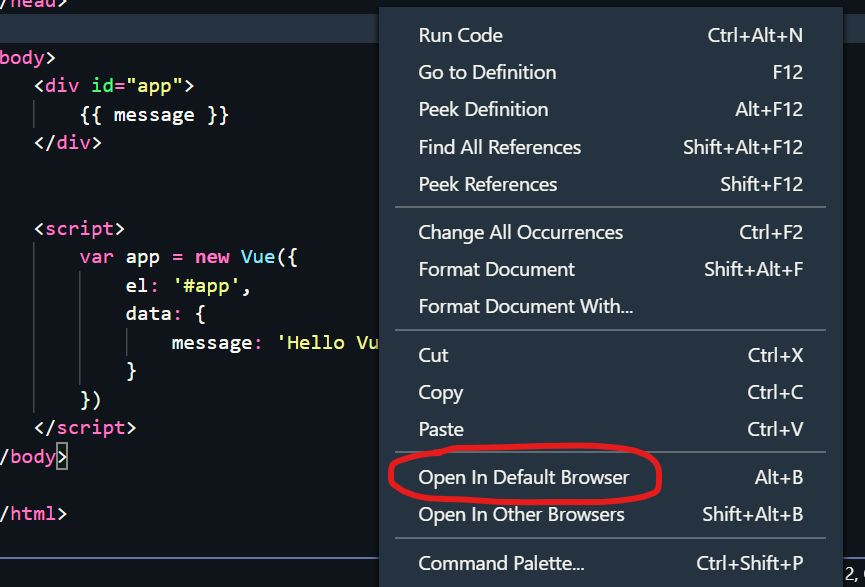
简单vue代码：
<!DOCTYPE html>
<html lang="en">
<head>
<meta charset="UTF-8">
<meta name="viewport" content="width=device-width, initial-scale=1.0">
<meta http-equiv="X-UA-Compatible" content="ie=edge">
<title>Document</title>
<!-- 引入vue的依赖文件 -->
<script src="https://cdn.jsdelivr.net/npm/vue"></script>
</head>
<body>
<div id="app">
{{ message }} //这里有一个message变量，用{{}}包起来
</div>
<script>
var app = new Vue({
el: '#app', //这里就是选择上面的div标签
data: {
message: 'Hello Vue!' //给message变量赋值，这里会同步到div标签中的message中
}
})
</script>
</body>
</html>右键，打开默认浏览器，然后浏览器中就能看到Hello Vue!
很容易，只需要三步，首先是引入vue依赖文件，然后在html标签中用{{xxx}}包着一个vue变量，最后就是创建Vue实例，在这个实例中选择指定标签，定义变量值，然后这个变量值就会在html标签中生效；
这里其实就相当于document.getElementsById("app").innerText="Hello Vue!"，然而vue的目的就是尽量不让我们去直接操作dom节点，我们只需要专注于向标签中填充数据就行了，了解了这些下面我们就简单看看vue常见的命令吧！
3.vue基础语法
我们在2中使用了{{}}这个东西表示其中的变量是和Vue实例相关联的，其实vue还给我们提供了一些命令
我们要注意一点：只要是跟vue指令绑定的，都是变量、函数对象（boolean类型除外）或者是表达式，比如经典的v-bind:class="{xxxx}"，v-on:clidk="xxx"；注意，引号里面的都是变量，不是字符串
3.1 v-bind指令
这个指令可以绑定标签中的任意属性，使得这个属性的值就变成了vue中的属性!有没有觉得这句话很绕，举个例子：<a v-bind:href="url">我是百度</a>
这个a标签的属性href,被v-bind命令给绑定了，使得href这个属性的值url就变成了vue中的一个属性，下图所示，在Vue实例中，我们就可以对url这个属性赋值了，是不是很容易，而且这个命令还可以简写成冒号，即上面的标签简写后就是<a :href="url">我是百度</a>
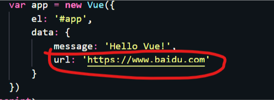
我上面说过，v-bind属性可以绑定标签中的任何属性，也就是说属性id，class，style，src等等属性都可以，只需要声明类似的 :xxx = “aaa”，然后在Vue实例中的data中声明aaa属性即可
3.2 v-for指令
这个指令常常用于循环展示，举个简单的例子：
var app = new Vue({
el: '#app',
data: { //定义了一个books数组
books: [{
name: "鲁滨逊",
price: 15
}, {
name: "葫芦娃",
price: 7
}]
}
})<ul>
<li v-for="book in books">书名是：{{book.name}}-------价格是：{{book.price}}</li>
</ul>
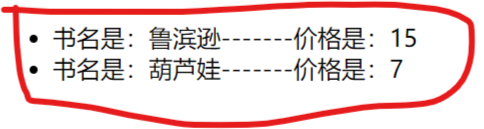
3.3 v-if指令
这个用于条件判断，如果v-if="flag"中flag为true，那么这个标签就是看得到的，否则就是看不到的，举个例子：
<h1 v-if="true">你看不到我</h1>
<h1 v-if="false">你看得到我</h1> 当然，也可以在v-if里面是一个属性，效果和上面是一样的
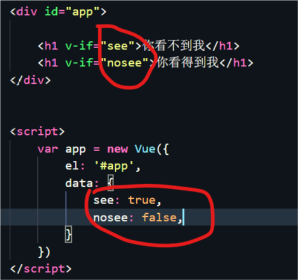
这个指令和v-show用法一样，效果几乎一样，唯一的区别就是v-if指令为false时，那么该标签在html中根本就没有，而v-show即使为false，这个标签在html是存在的，只不过该标签使用style="display: none;"不显示出来，这也很好理解
3.4 v-model指令
注意，这个指令只会用在input标签中，换句话说只会用在表单中，举个例子,如下图，只要输入框中改变了什么，那么上面的显示也会跟着改变，而且也会用于表单信息收集，后面用到的时候再说
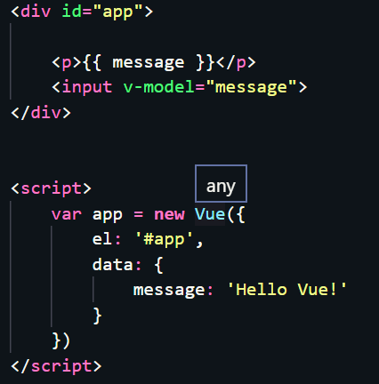 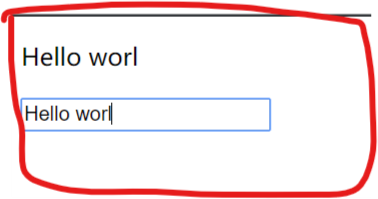
3.5 v-on指令
前面的几个指令都是绑定属性的，这个命令是绑定事件的，我们可以用这个命令来绑定一些事件函数；举个例子，绑定只要鼠标的点击事件,每一次点击按钮，counter的值就会加一，使得vue实例中的counter也会跟着加一，然后p标签又会时刻监听着counter的变化，所以最终的效果就是每点击一次按钮，屏幕中的数字就会变化加一
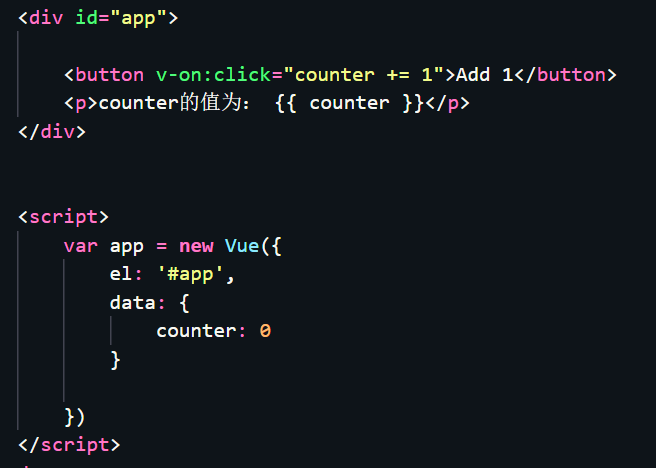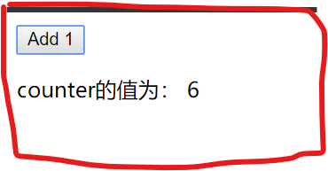
补充一下，v-on指令由于很常用，所以也有简写形式，就是@，比如上面的<button @click="counter += 1">Add 1</button>
到这里可以说vue的几个基本指令就说完了，还是很容易的，不知道大家有没有发现，我们现在的指令还只是涉及到了vue实例中的data中的属性，那么，在Vue实例中，除了el、data还有其他的属性吗？
4.vue实例的属性
vue实例的属性太多，我们就说说的常用属性，首先的就是在上面我们说到的el属性和data属性，这两个属性很好理解，el的全称是element，也就是标签嘛，这里用的id选择器选择指定标签，当然也可以用class选择器，自己可以试试；然后data属性表示在标签中要进行初始化的一些静态数据，注意，这里是静态数据；
然后我们要想办法让这些数据是动态的，于是就有了事件监听然后调用指定的函数，于是就有一个属性是methods，在面向对象的语言中，这些函数也叫做方法，这里的就是存放标签中监听的自定义的事件函数；
由于每一次标签中的数据发生变化，我们要动态显示的话，都用函数监听，那么每一次都会调用函数，虽然说可以实现基本功能，但是在某些特殊情况下，我们可以利用一个计算属性computed，这个属性有一个好处，就是可以使用缓存，比如计算属性中有个变量数据一直没有改变，那么下一次访问就直接返回缓存中的结果就行了，而函数的话每一次都会去执行一次；
还有就是在vue实例在实例化的过程中也会默认调用一些函数（这些函数不是在methods中的），这些函数是一些生命周期函数，大概分为三个部分，初始化的时候调用beforeCreate和created、beforedMount和mounted；更新数据的时候beforeUpdate和updated；销毁vue实例的时候beforeDestroy和destroy；
我们简单了解vue的生命周期，下面有个图从官网那里拿过来的，很经典的一个图：

下面我们就用简单的例子，简单看看使用一下这几个常用的属性和生命周期函数：
<!DOCTYPE html>
<html lang="en">
<head>
<meta charset="UTF-8">
<meta name="viewport" content="width=device-width, initial-scale=1.0">
<meta http-equiv="X-UA-Compatible" content="ie=edge">
<title>Document</title>
<script src="https://cdn.staticfile.org/vue/2.2.2/vue.min.js"></script>
</head>
<body>
<div id="app">
<input type="text" v-model="message" placeholder="随便输入什么内容">
<input type="submit" value="逆转按钮" @click = "reverseMsg">
<br>
<div>计算属性为：{{msg}}</div>
</div>
<script>
new Vue({
el: '#app',
data: {
message: ''
},
methods:{
//这个方法作用是将字符串逆转
reverseMsg(){
return this.message = this.message.split('').reverse().join('')
}
},
computed:{
//这个计算属性，在这类就是将逆转的字符串后面加计算返回
msg(){
return this.message+"计算"
}
},
//以下都是生命周期函数的执行时机
beforeCreate(){
console.log("beforeCreate方法执行")
},
created(){
console.log("create方法执行")
},
beforeMount(){
console.log("beforedMount方法执行")
},
mounted(){
console.log("mounted方法执行")
},
beforeUpdate(){
console.log("beforeUpdate方法执行")
},
updated(){
console.log("updated方法执行")
},
//注意，下面两个直接用页面测试不出来，到后面使用了vue-cli之后就很好测试了
destoryed(){
console.log("destoryed方法执行");
},
beforeDestory(){
console.log("beforeDestory方法执行");
}
})
</script>
</body>
</html>
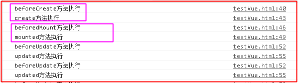
可以看到，多次更新数据框中的数据都会调用更新的函数，而beforeCreate和created、beforedMount和mounted只会执行一次；beforeUpdate和updated会执行多次
具体的步骤：
在调用beforeCreate的时候，vue实例中的el，data，data中的message都为undefined；
调用created的时候，el还是undefined，而数据已经与data中的属性进行绑定（放在data中属性当值发生改变的同时，视图也会发生变化），一般可以在这里做初始数据的获取；
调用beforedMount，载入前（完成了data和el数据初始化），但是页面中的内容还是vue中的占位符，data中的message信息没有被挂在到Bom节点中，一般可以在这里做初始数据的获取；
调用mounted，载入后html已经渲染(ajax请求可以放在这个函数中)，把vue实例中的data里的message挂载到BOM节点中去；
调用beforeUpdate，更新前状态（html中的数据变化前，不是data中的数据改变前），重新渲染之前触发，然后vue的虚拟dom机制会重新构建虚拟dom与上一次的虚拟dom进行对比之后重新渲染；
调用updated,数据已经更改完成，dom也重新渲染完成
没记错的话还有一个监听属性没有说到，后面用到再说，其实监听属性暂时基本用不到，先放一下，还有几个动画的指令，有兴趣的自己研究一下；
5.vue组件
前面说了这么多都是一些基本用法，vue真正的精髓就是组件，可以有很多很多的组件，那么什么是组件呢？是一个js文件，还是一个css文件？
其实我认为组件是一个资源的集合，比如后面我们可能会用到的Element UI组件库中的组件，每一个组件都包括js，css，scss，image等资源组成，然后我们随时可以用这个组件放在我们的页面中，不需要我们去自己手写样式或者去复制别人的css、js代码了，实现了代码的重用性，极大的简化了开发；
当然我们这里会用到最简单的组件，组件中就是一个template属性（在模块化开发中组件是一个vue文件，里面有一个template标签，在这个标签里，可以用所有的html语法以及vue指令），例如下面的这样的：
<div id="app">
<!--至于怎么使用组件呢？可以直接用组件名当作标签使用就行了，注意，这里标签中可以使用vue指令-->
<template01></template01>
<template02></template02>
<div>{{message}}</div>
</div>
<script>
var template01 = {template: '<h1>这里是第一个自定义组件</h1>'}
var template02 = {template: '<h1>这里第二个自定义组件</h1>'}
//这里是第一种注册组件的做法，直接全局注册，也就是说子组件中还可以用组件2
Vue.component("template02",template02)
new Vue({
el: '#app',
data: {
message: 'hello vue'
},
//这是第二种注册组件的方式，但是这种方式是能在当前组件使用，这里相当于 "template01": template01
components:{
template01
}
})
</script>
如果是在组件化开发中，我们的组件是这种形式的，下图所示：
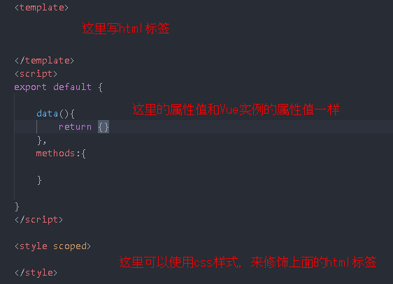
·· 这里还有一点需要说一下，上面我们使用了template01 组件，但是这个组件中是不能使用new Vue(xxx)这个里面的data数据的，因为取不到；
我们把当前的组件叫做父组件，template01 组件叫做子组件，现在我们需要传递数据，由于子组件无法使用父组件中的数据，于是我们可以在子组件使用一个props，然后父组件可以在<template01></template01>中使用vue指令绑定自定义属性，这样就将数据传到子组件的props中，然后子组件就可以随便使用props中的数据了；
举个简单的例子：
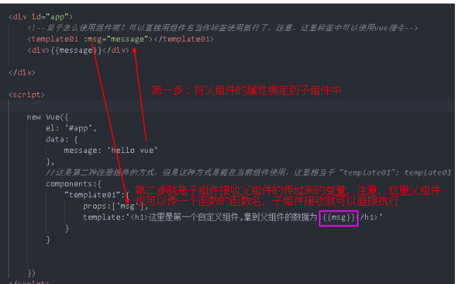
补充一下，不知道大家有没有觉得这个template属性比较熟悉，在前面应该见过，就是那个Vue生命周期的图中，有关于生命周期的具体详解我看了一篇博客讲的挺不错的，有兴趣的可以去看看，点击这里；
其实这里的template是vue的一个实例属性，就像data属性和el属性一样，实际上表示的是要渲染的模板，如果在Vue中没有声明这个属性template，默认就把el属性指向的标签当作template去解析；否则只解析Vue中的template属性对应的标签内容，此时el对应的标签不会解析
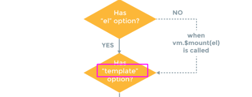
<div id="app">
<div>外面的模板：{{message}}</div>
</div>
<script>
new Vue({
el: '#app',
data: {
message: 'hello vue'
},
//注意，此时不管这个div中没有没id="app"都一样，只会默认解析这个模板，然后渲染数据
template:'<div><p>template属性对应的模板：{{message}}</p></div>'
})
</script>
显示的结果是：
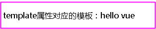
由此可以知道Vue实例中的template属性优先级更高，不过这个属性很少用到。。。
6.总结
多了解Vue的声明周期以及vue基础知识很重要，然后在使用vue的过程中学会了很多的东西，慢慢学吧，这次只是简单的看了一下基础知识，下一次就好好的用vue-cli构建项目，然后快速开发一些东西